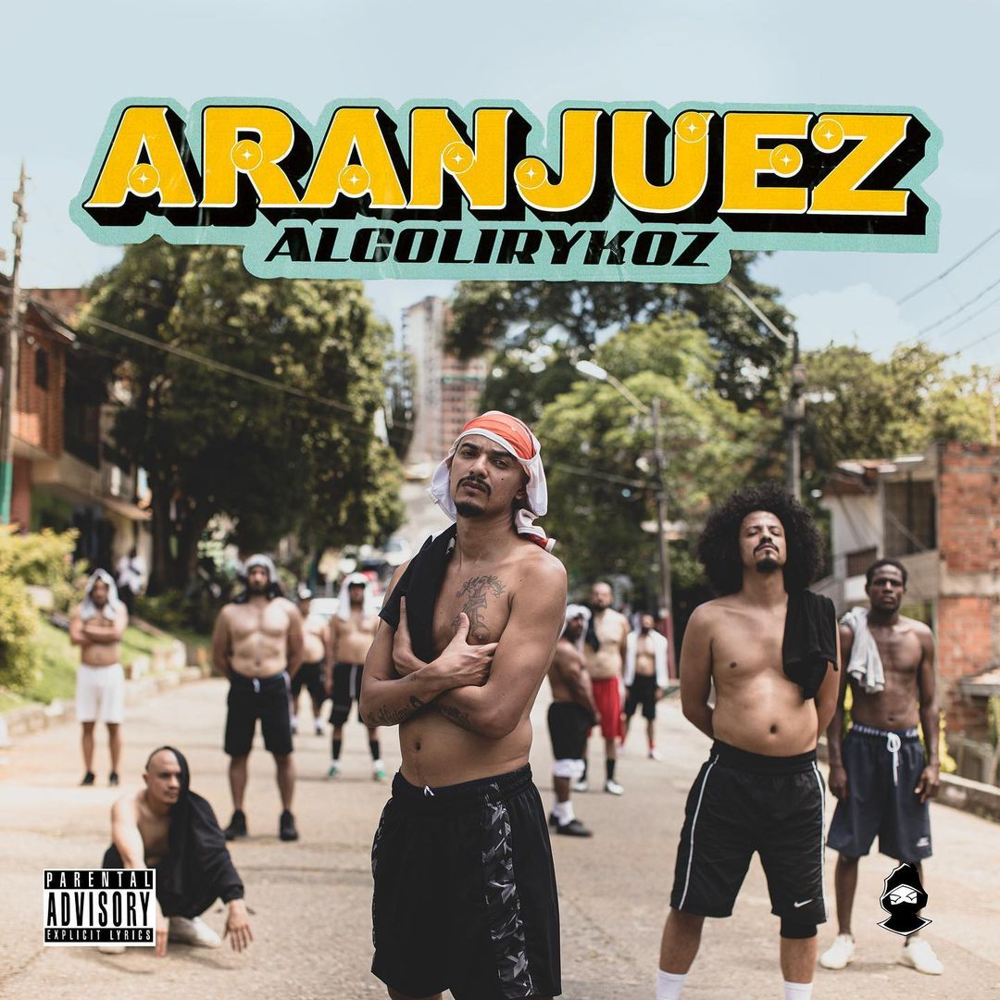
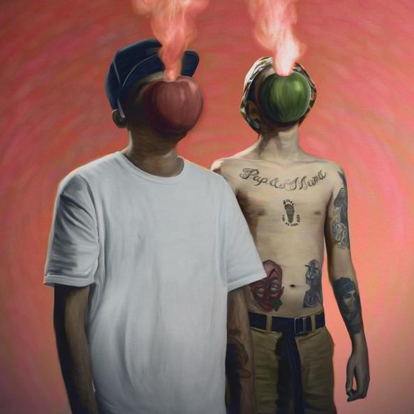

Ali Aka Mind
Ali Rey Montoya más conocido como Ali A.K.A. Mind es un rapero independiente, MC y productor colombiano. Su música está influenciada por múltiples géneros desde el rap estadounidense de Boot Camp Clik hasta los boleros de Julio Jaramillo, y desde las ideas de Eloy Alfaro hasta la poesía de Atahualpa Yupanqui.

AlcolirykoZ
Alcolirykoz es un grupo de hip hop que nació en el año 2005 en Medellín, Colombia, en el barrio Aranjuez en la comuna 4 de la ciudad. Integrado por los primos y raperos Juan Carlos Fonnegra (aka Gambeta) y Carlos Andrés (aka Kaztro) junto a su vecino y DJ Gustavo Adolfo (Fa-zeta).

Doble Porcion
Doble Porción es un duo de raperos de Medellín, Colombia nacido en 2011 y conformado por Métricas Frías y Mañas Ru-fino.